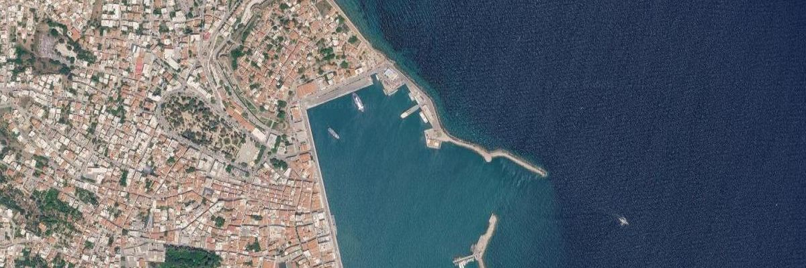
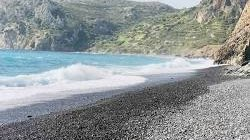

🌤️ Sakız'da hava
Her şey ayarlandı

⛴️ Feribot — Çeşme → Sakız
09:00- Evden çıkış: 05:30 (en geç 06:00 — feribotu kaçırmak yok! 😄)
- Limanda olma: 07:30 — pasaport ve gümrük işlemleri için
- Dönüş: 28 Temmuz 18:00 · limanda 16:45
- 🟢 Kapı vizesi ONAYLANDI
3 gün, bol seçenek
Her günün iki planı var — sabah kahvaltıda oylayın, kazanan uygulanır. İkisi de güzeldir, yanlış seçim yok. 😌
Merhaba Sakız!
Erken kalkış, kısa yolculuk, ilk deniz.
- 05:30Yola çıkış 🌙Uykucular arabada uyur. Pasaportlar en üstte!
- 07:30Çeşme Limanı — check-inPasaport + gümrük. Kapı vizesi onaylı, evraklar çantada.
- 09:00Feribot kalkıyor ⛴️Güvertede martı sayma yarışması başlasın (bkz. Bingo).
- 09:30Sakız'a varış + araç teslimiMusa & Gizem aracı alırken (Neorion 3, limana 5 dk) diğerleri liman kahvesinde.
- 10:30Chios Town keşfiVounaki Meydanı → Aplotaria Çarşısı → Ceneviz Kalesi surları. Gölgeli, puset dostu.
- 12:30Öğle: liman tavernası 🐙Kordonda balık-meze. Çocuklara patates her yerde var, garanti.
- 14:30Karfas'a geçiş (10 dk)Market molası: su, meyve, kahvaltılık.
- 15:00Check-in: Chios Shallow Sea 🏠Karşılamaya gelecekler. Bavulu at, mayoyu giy!
- 15:45Karfas Plajı 🏖️Kapının dibinde: kumlu, sığ, 2 yaş için birebir.
- 19:30Akşam: Karfas sahil tavernasıGün batımına karşı ilk "Yamas!" 🥂
- 05:30Yola çıkış 🌙Aynı senaryo: en geç 06:00, tercihen 05:30.
- 09:00Feribot + varış + araç teslimiMusa & Gizem araçta, ekip kahvede.
- 10:15Doğruca Karfas 🏖️Geç kahvaltı + ilk deniz. Şezlonglu kısım çocuklarla rahat.
- 15:00Check-in + öğle uykusu 😴2 yaş şekerlemesi = herkese mola.
- 17:00Daskalopetra — Homeros'un Kayası 🗿20 dk kuzeye. Homeros'un öğrencilerine burada ders verdiği söylenir. Çocuklara masal gibi anlatın!
- 19:00Chios Town kordonuAkşam yemeği + liman ışıkları.
- 21:00Kronos dondurması 🍦1930'dan beri! Sakızlı (masticha) mutlaka denenecek.
Mastik Diyarı & Siyah Plaj
Güneye yolculuk: desenli evler, volkan taşları, masal sokaklar.
- 09:00Güneye hareket 🚗~40 dk. Yol üstünde sakız ağaçlarına dikkat — "ağlayan" ağaçlar bunlar!
- 09:45Pyrgi — desenli köy 🖤🤍Geometrik "ksista" evler. Meydanda kahve, çocuklara görev: en desenli evi bul!
- 11:15Mavra Volia — siyah plaj 🌑Volkanik siyah çakıllar, masmavi su. Deniz ayakkabısı şart; 2 yaş kıyı kenarında.
- 13:00Öğle: Emporios limanı 🐟Küçük koyun tavernaları — ahtapot burada başka güzel.
- 14:30Komi Plajı 🏖️Uzun kumsal, sığ deniz, şezlong + duş. Çocuk cenneti — kumdan kale vakti.
- 17:30Dönüş yolu + dondurma molasıKomi sahilinde dondurmacılar var; yol üstünde Armolia çömlek atölyeleri.
- 19:30Akşam: KarfasYorgun ama mutlu. Erken yatış — yarın veda günü.
- 09:00Güneye hareket 🚗Önce en uçtaki köyden başlıyoruz.
- 09:50Mesta — labirent köy 🌀Korsanlara karşı labirent gibi kurulmuş taş sokaklar. Görev çocuklarda: meydana giden yolu onlar bulacak!
- 11:30Sakız Müzesi 🌳Mastik Müzesi (10:00–18:00, bugün açık). Damla sakızının hikâyesi — bahçesinde sakız ağaçları.
- 13:00Pyrgi'de öğle + köy turuMeydan tavernasında yemek, desenli evler arasında yürüyüş.
- 15:00Mavra Volia — siyah plaj 🌑İkindi serinliğinde deniz + dünyanın en fotojenik plajında aile fotoğrafı.
- 18:00Dönüş: KarfasYolda Armolia'da çömlek vitrinlerine göz atın.
- 20:00Akşam yemeğiKarfas ya da Chios Town — enerjiye göre.
Veda Turu & Kebap Finali
Check-out 11:00 · Feribot 18:00 · Akşam Manisa kebabı!
- 09:00Kahvaltı + bavul + check-outEn geç 11:00'de çıkış; bavullar araçlara.
- 10:00Anavatos — hayalet köy 🏰Kayalık tepede terk edilmiş taş köy — adanın en dramatik manzarası. 2 yaş için taşıyıcı iyi olur; yol üstünde Avgonyma'da fotoğraf molası.
- 11:45Nea Moni Manastırı ✨1000 yıllık UNESCO mirası — Bizans mozaikleri. Kısa ve etkileyici bir mola.
- 13:00Lithi Plajı + balık öğlesi 🐟Batı kıyısının kumlu koyu; plaj tavernasında taze balık, ardından son deniz.
- 15:45Chios Town'a dönüş (35 dk)Hızlı hediyelik turu: damla sakızı, sakız reçeli, loukoumi.
- 16:30Araç iadesi 🚗Neorion 3 ofisine teslim, limana yürüme mesafesi.
- 18:00Feribot: Sakız → Çeşme ⛴️Güvertede veda + Bingo ödül töreni!
- 20:30Manisa: Spor Kebapçısı 🍢Ali Koç'un da yediği meşhur Manisa kebabıyla kapanış.
- 09:00Ağırdan kahvaltı + bavulCheck-out 11:00 — acele yok.
- 11:00Karfas'ta son deniz 🏖️Plaj zaten evin önünde; duşlar plajda var.
- 13:30Öğle: Karfas tavernasıMastelo peyniri ızgarası şansı — son fırsat!
- 15:00Chios Town hediyelik turu 🛍️Aplotaria'da damla sakızı, sakızlı kurabiye, sabun; çocuklara küçük hatıralar.
- 16:00Kronos finali 🍦Son bir sakızlı dondurma — gelenek tamamlanır.
- 16:30Araç iadesi 🚗Neorion 3 — sonra limana yürüyüş.
- 18:00Feribot: Sakız → Çeşme ⛴️Bingo ödül töreni güvertede!
- 20:30Manisa: Spor Kebapçısı 🍢Manisa kebabı finali — eve mis gibi kokularla dönüş.
Hangi plaj, hangi çocuğa?
Damla sayısı = çocuklarla rahatlık puanı (🌢 5 üzerinden). Hepsi haritaya bağlı, dokun ve git.

🌑 Mavra Volia
🌢🌢🌢🌢🌢🧠 Plaj taktikleri
- Deniz ayakkabıları çakıl plajların anahtarı — üçü de çantada olsun.
- En sıcak saatler (13:00–16:00) için: Karfas'ın şezlonglu bölümü gölgelikli.
- 2 yaş uykusu plaj dönüş saatine denk gelirse araç = mobil uyku odası. 😴
- Duş + üst değiştirme: Karfas ve Komi'de var, Mavra Volia'da yok.
Nereye dokunursan oraya
Noktalara dokun — ilgili karta götürür. Yeşil: köy & keşif, mavi: plaj.
Adanın masal tarafı
Sakız'ın köyleri korsanlara karşı labirent gibi kurulmuş — çocuklara "kale köyler" diye anlatın, keşif oyuna dönsün.
Ne yenir, ne alınır?
🍦 Mutlaka tadın
- Sakızlı dondurma — Chios Town'da Kronos (1930'dan beri) klasik durak.
- Mastelo peyniri — adaya özgü, ızgarada servis edilir; çocuklar da bayılır.
- Ypovrichio ("denizaltı") — soğuk suya batırılmış vanilya/sakız macunu çubuğu; çocuk klasiği.
- Taze balık & ahtapot — Emporios ve Lithi tavernalarında güneş kurusu ahtapot.
- Souvlaki — garantici çocuklar için her yerde güvenli liman.
🛍️ Bavula girecekler
- Damla sakızı (mastiha) — dünyada sadece bu adada üretilir; ELMA marka sakızlar hediyelik klasiği.
- Sakızlı reçel & loukoumi — kahve yanına.
- Sakızlı sabun ve krem — bavul dostu hediyeler.
- Armolia çömlekleri — 2. gün yol üstünde atölyeler.
🍽️ Nerede yiyelim? — bölge bölge
- Chios Town: Hotzas — adanın klasiği, her şey el yapımı (yoğurtlu kuzu kebabı meşhur). The Pastards — liman yakını pizza-makarna; çocuklar için garanti liman.
- Karfas / Agia Ermioni: Bachari — koy manzaralı deniz ürünleri; eve 5 dk, "özel akşam" adayı.
- Komi: Likos — adanın en iyi pizzası + peynirli pide (evet, pide!). Plajda öğle için beach bar'lar da iş görür.
- Katarraktis (Komi dönüş yolu): Meltemaki — 1997'den beri, masalar denizin dibinde; mastelo dolgulu kalamarı deneyin.
- Lithi: Kyra Despoina — 1953'ten beri plajın üstünde; taze balık.
- Mesta / Olympi: Mestousiko (Mesta, ızgara) ve Amethistos (Olympi, ev yemekleri). Pyrgi meydanında kahve: Stoa Cafe.
- Avgonyma (Anavatos yolu): To Asteri — Ege'ye bakan terasta öğle; 3. gün Plan A ile birleşir.
💡 Biliyor muydunuz?
- Sakız ağacı dünyanın her yerinde yetişir ama sadece bu adanın güneyinde "ağlar" — reçinesi damla damla toplanır.
- Adanın Türkçe adı da buradan gelir: Sakız Adası. Yunanlar "Hios" der.
- Çeşme ile Sakız arası yaklaşık 8 deniz mili — feribot yolculuğu çay içimi kadar.
- Mavra Volia'nın siyah taşları eski bir volkan patlamasının hediyesi.
- Homeros'un bu adada doğduğuna inanılır — İlyada'nın yazarıyla hemşehri oluyorsunuz (2 günlüğüne).
Sakız Bingo 🎯
Görevi yapan kutuya basar, damga alır. Hepsini toplayan feribotta madalya töreniyle ŞAMPİYON ilan edilir!
5 dakikada Yunanca
Tavernada bir "efharisto" demek, dondurmada bonus gülümseme getirir. Garanti.
🚗 Araçta oyunlar
- Renk avı: ilk mavi kapıyı / ilk kediyi / ilk sakız ağacını gören puan alır.
- Yunanca tabela okuma: ΤΑΒΕΡΝΑ'yı ilk sökebilen kazanır (cevap: taverna!).
- Masal modu: Anavatos yolunda "taş köyün sırrı" masalını büyükler uydurur, çocuklar devamını getirir.
Belgeler & numaralar
📄 Rezervasyon künyeleri
- ⛴️ Feribot: Feribotlines ·
- 🏠 Otel:
- 🚗 Araç:
📞 Önemli numaralar
- 🏠 Ev sahibi: +30 227 103 0399
- 🚗 Araç ofisi (Avance): +30 227 102 1666
- ⛴️ Feribotlines: +90 850 885 0097
- 🚨 Acil durum (AB geneli): 112
- 💊 Eczane = yeşil haç tabelası (ΦΑΡΜΑΚΕΙΟ)
💶 Para & pratik
- 💶 Nakit durumu: toplam ~100 € — köy tavernası, plaj büfesi gibi "sadece nakit" yerlere saklayın. Gerisi dert değil: kredi kartı her yerde sorunsuz geçiyor.
- Araç depozitosu (868 €) için Gizem adına, üzerinde numarası yazılı fiziksel kart — limiti kontrol edin.
- Saat farkı yok — yazın Yunanistan ve Türkiye aynı saatte. 🎉
- Telefon: yurt dışı paketi alın ya da ev + taverna wifi'ı; sınırda otomatik Yunan operatörüne geçer.
- Trafik aynı (sağdan); Türk ehliyeti geçerli. Köy yolları dar — kornaya değil sabra güvenin.
- Benzinci güneyde seyrek — 2. gün çıkmadan depoya bakın.
- Musluk suyu yerine şişe su; marketler bol.
- 26'sı Pazar: bazı dükkânlar kapalı olabilir; market ihtiyacını cumartesiden değil, adada ilk gün öğleden önce alın.
- Öğle 14:00–17:30 arası küçük dükkânlar "siesta"da olabilir.
👶 2 yaş özel notları
- Puset: Chios Town kordonu, Karfas, Sakız Müzesi rahat. Mesta/Anavatos taş zemin — taşıyıcı kurtarır.
- Öğle uykusunu araç yolculuklarına denk getirin (2. gün güney yolu ~40 dk, cuk oturur).
- Bez, mama, tanıdık atıştırmalıklar yeterli stokla — marka bulmak garantili değil.
- Ateş düşürücü + termometre çantada; eczaneler öğlen kapanabiliyor.
Bavul listesi
İşaretledikleriniz telefonda kayıtlı kalır — havalimanı klasiği "acaba aldık mı?" krizine son.